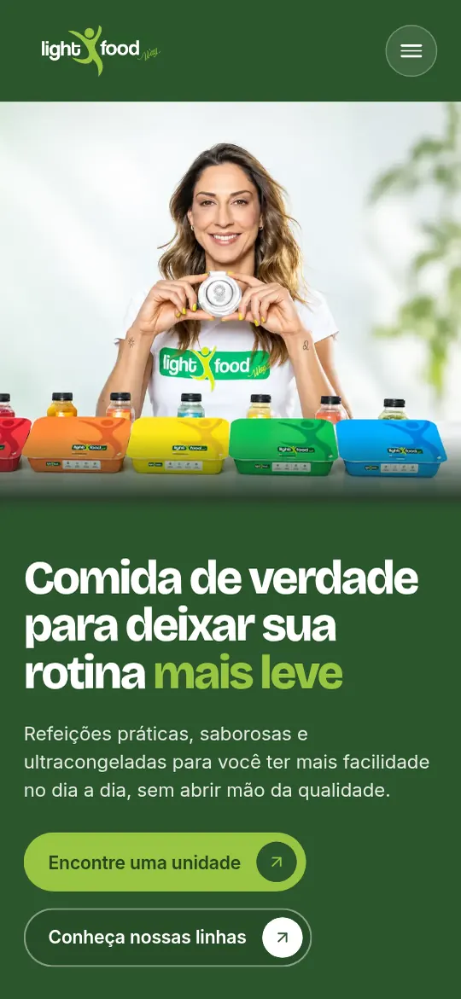

01 · Alimentação & FranquiaFood & Franchise
Light Food Way
- ProblemaProblem
- A preencherTo be filled
- O que tiramosWhat we took out
- A preencherTo be filled
- Decisão-chaveKey decision
- A preencherTo be filled
- NúmeroNumber
- A preencherTo be filled